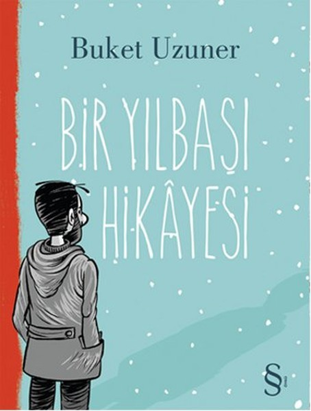
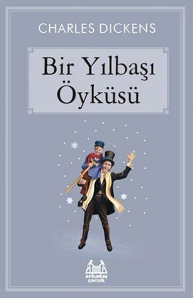
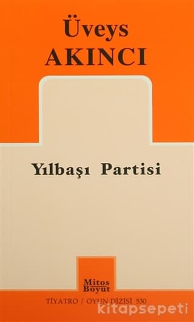

YILBAŞINA ÖZEL ÜÇ KİTAP

1. Bir Yılbaşı Hikayesi
Aslında tamamen bir kaçıştı benimkisi. Tüketim çılgınlığından, yozlaşmış siyasetten, açgözlülük ve ikiyüzlülükten kaçış… Özgürlük yoksulu ülkeleri demokrasi adına-imiş gibi işgal eden ülkelerden birinin vatandaşı olmak utancından, çaresizlikten, tıraş olmak mecburiyetinden ve tabii kendimden kısacık bir süre için kaçış, bir nefes molası…”
Ancak bu “nefes molası”, Buket Uzuner’in sıcak, hınzır, bilge kalemiyle sürpriz bir yolculuğa, yürekçelen bir hikâyeye evriliyor. Tıpkı küçük bir tohumun, ulu bir çınar umuduna dönüşmesi gibi… Yeni bir yılın eşiğinde, beklenmedik bir anda değişen hayatları, kıtaları birbirine bağlayan görünmez köprüleri ya da kıtaları birbirinden ayıran anlamsız engelleri (!) anlatıyor Bir Yılbaşı Hikâyesi…

2. Bir Yılbaşı Öyküsü
Ebenezer Scrooge huysuz, cimri, bencil ve taş kalpli bir adamdı. Kimseye değer vermez, işinden başka bir şey düşünmez, çok parası olmasına rağmen yoksullara yardım etmezdi… Kalbini ve gözlerini dünya üzerindeki iyilik ve güzelliklere kapatmıştı. Ancak yılbaşı arifesinde evine gelen davetsiz bir misafir her şeyi değiştirdi; bu misafir, yıllar önce hayatını kaybeden iş ortağı Marley’in ruhuydu. Tüm vücudu zincirlerle kaplı olan Marley, Scrooge’u uyarmaya geldiğini ve üç hayalet tarafından ziyaret edileceğini söylemişti: Bunlar Geçmiş Yeni Yılların, Şimdiki Yeni Yılın ve Gelecek Yeni Yılın Hayaletleriydi. Bu üç hayalet Scrooge’u, hayatını ve kişiliğini sonsuza dek değiştirecek ve onu asla unutamayacağı bir yolculuğa çıkaracaktı.

3. Yılbaşı Partisi
ılbaşı Partisi, yetişkin iki erkek kardeşin, aralarında yaşam boyu süren anlaşmazlıklarının traji-komik öyküsü. Oyunda, bireyin kendini gerçekleştirme; var olma gibi ruhsal sorunları, kişilik, özgürlük, yalnızlık, aşk, öteki olma, sevgi-nefret birlikteliği, iyi ile kötünün değişimi gibi temalar içinde ele alınıyor.Yılbaşı Partisi, kutsal ve sanatsal anlatıların, eski hikâyelerin günlük hayattaki izdüşümlerinin alegorik bir biçimde dile geldiği, kurmaca ile gerçeğin birbirine karıştığı, kara güldürü ile trajedinin iç içe geçtiği bir oyun…